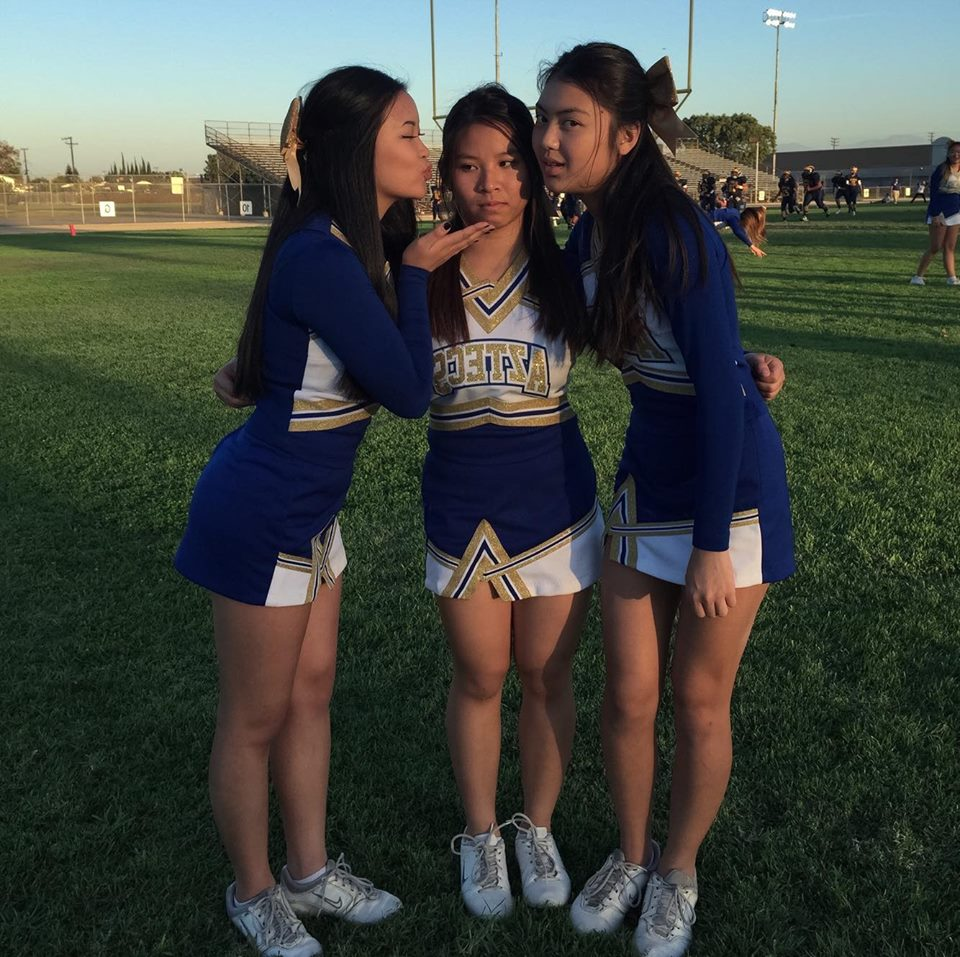

Grade: 12
| Period | Class |
|---|---|
| 1 | Calculus AB |
| 2 | AP Psychology |
| 3 | Civics |
| 4 | AP Computer Science |
| 5 | Ap Literature/ Composition |
| 6 | Cheer |
Bio: My name is Vy Nguyen and I am a senior at La Quinta High School. I’ve been in cheer for four years and I am one of this year’s captains. My goal in life is to own a corgi and my favorite color is black.
"I eat babies"- Maithy Tran
